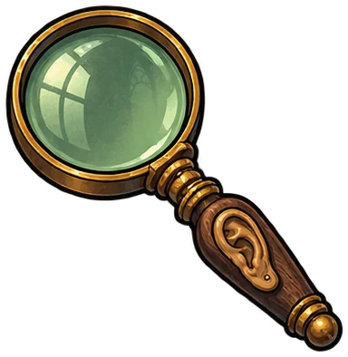
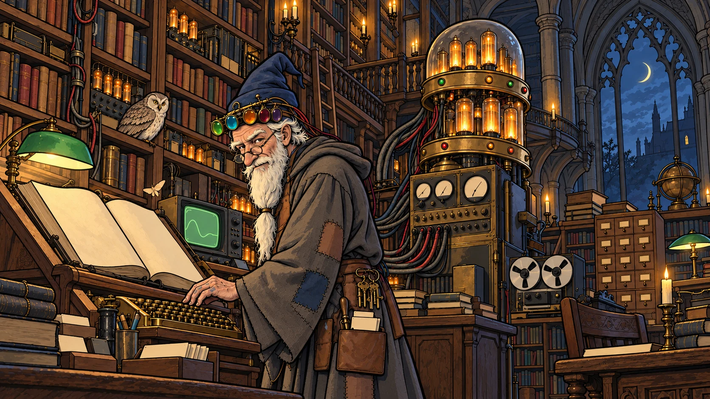
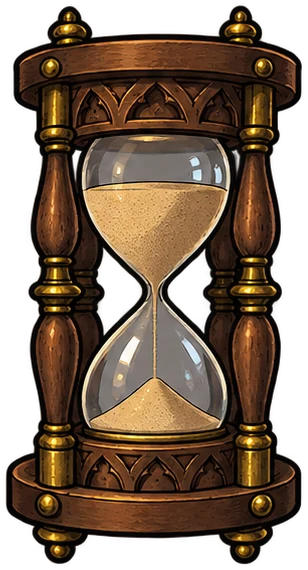
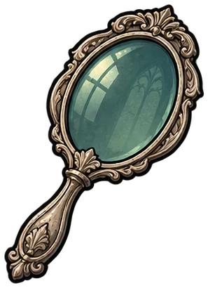
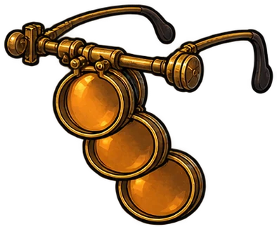
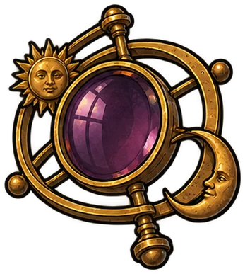
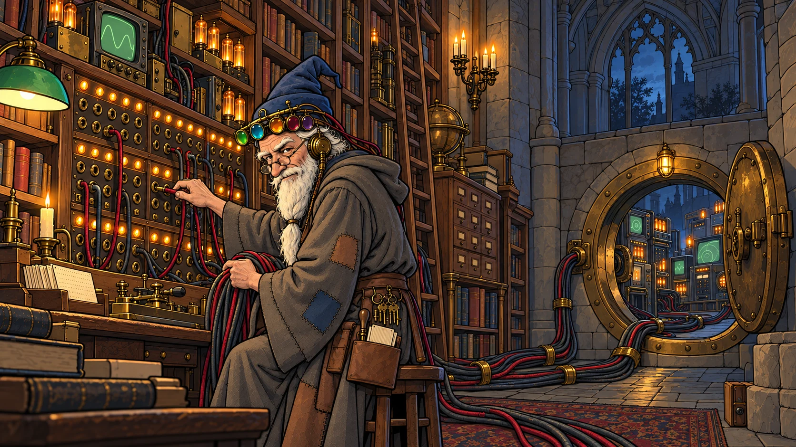
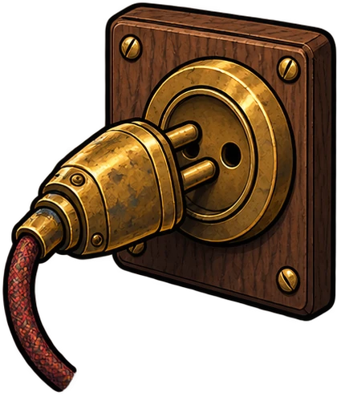
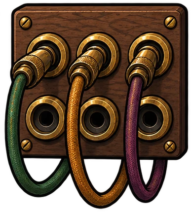

Personal facts
What the user said about themselves, rather than someone else.

Find the right memory.
Show the evidence.
An assistant that remembers months of conversations, and says so when it doesn't.
Find the right memory. Show the evidence.
No pages on the desk yet.

The Librarian lights the candles…
INSIDE THE LIBRARY
01 / THE PROBLEM
Months of conversation hide the small details that matter. Some facts change. Some mentions belong to someone else. Some answers were never there.
The Librarian finds the relevant evidence, checks its context, and gives Reactor just the pages it needs.
02 / FROM QUESTION TO ANSWER

THE QUESTION
A single fact may be buried in months of conversation. Start with what you want to remember.
Every replay above starts with a real question from the benchmark.
03 / FIVE SPECIALISED LENSES

What the user said about themselves, rather than someone else.

What the assistant actually recommended in an earlier conversation.

Bring scattered facts together, then count or compare.
Read the timeline carefully. The latest relevant value wins.

Find the right events. Let code do the date arithmetic.
04 / FOR DEVELOPERS


Works today
POST /api/pack question → cited pagesPOST /api/ask question → Reactor’s answerPOST /api/upload your own archive

Works today
The same memory as a tool for any MCP client: librarian67.pages.dev/mcprecall search timeline ask_reactor
Connect Claude Code, Claude Desktop or Cursor →
Public at submission
The retrieval filter, with its Python and HTTP API. We have a business use case, but we share the code with the community. Open on GitHub →
AND WHEN THE ANSWER ISN’T THERE?
Reactor can abstain instead of inventing an answer. The selected pages and citations stay open to inspection.
Try the demo ↑